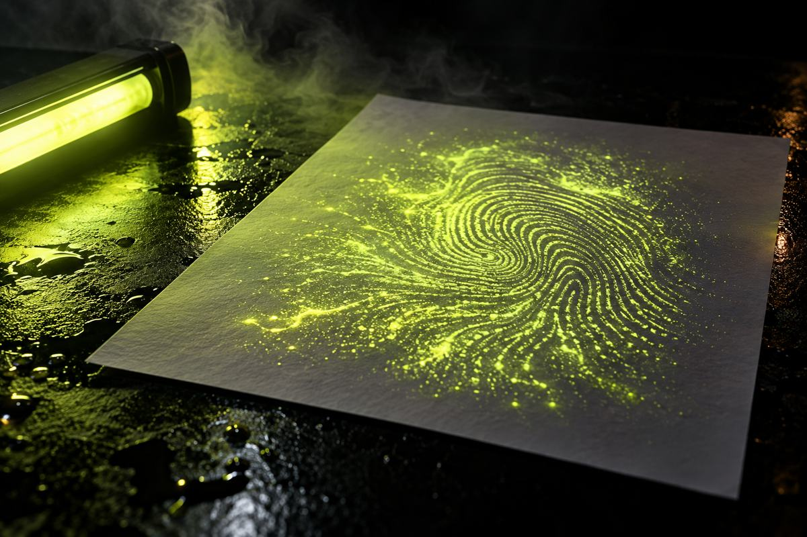
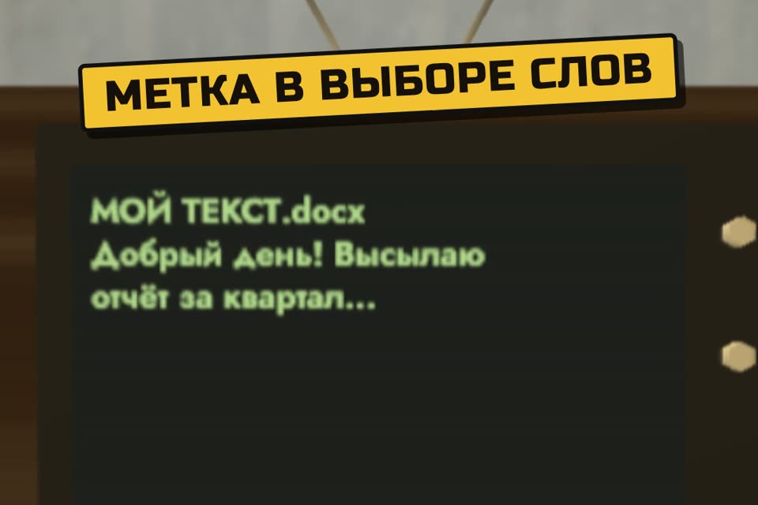

Claude метит твой текст. Как проверить
Новые модели Claude ставят на текст невидимый водяной знак, и не только в Европе, а по всему миру. Ниже что пишут Anthropic и OpenAI, наш прогон и проверка текста в браузере.
- только первоисточники
- 16 ответов проверили сами
- проверка в браузере
- без «пройти детектор»
К ролику «Клод, ты ставишь метку на мой текст?» · обновлено 27 октября 2026

Проверка на этой странице ищет невидимые символы. Сам водяной знак Claude она не видит: он в выборе слов, а детектор Anthropic закрыт.
Проверить текст за 2 шага

Вставьте текст в проверку
Проверка идёт в вашем браузере, текст никуда не отправляется.
Она ищет невидимые символы, странные пробелы и дефисы, а также латинские буквы в русских словах.
«Чисто», если невидимых символов и смешанных слов нет. Иначе список находок с кодом символа и словами вокруг. Склейки внутри эмодзи проверка пропускает: так устроен сам эмодзи.
То же на компьютере
Скрипт на Python без установки пакетов.
Скачайте check_invisible.py (он же на GitHub). Запуск на Mac:
python3 check_invisible.py текст.txt
pbpaste | python3 check_invisible.py -Что пишет Anthropic
14 августа 2026 года Anthropic опубликовала статью «How Claude's text watermark works», а подробности держит в справке «How Claude marks AI-generated content» (обновлена 21.10.2026). Главное дословно:
- Какие модели. «Claude models launched on or after August 2, 2026 support marking at launch»: знак есть у моделей, вышедших со 2 августа 2026 года. По таблице в справке текстовый знак сейчас стоит у Opus 5.5, Opus 5, Opus 4.8, Sonnet 5.5, Sonnet 5, Haiku 5.5, Fable 5 и 5.1, Mythos 5.1. У Opus 4.5–4.7, Sonnet 4.5/4.6 и Haiku 4.5 его пока нет, их обещают добавить «over the coming months».
- Где. «Claude Platform (API), Claude, Claude Code, Claude Cowork, and Claude Tag», а также через AWS, Google Cloud и Microsoft Foundry. Знак ставится «at the model level», то есть не зависит от того, в каком приложении вы работаете.
- По всему миру. «We're applying watermarking globally at launch because we don't yet have a durable way to scope it by region». Повод — европейский закон об ИИ (EU AI Act), но включили везде.
- Как устроен. Это «a version of the SynthID-Text approach» от Google DeepMind. Когда модель выбирает из почти равных слов («пасмурно» или «серо»), выбор делает не обычный генератор случайных чисел, а секретный ключ. Глазом разницы не видно, а тот, у кого есть ключ, видит закономерность.
- Никаких скрытых символов. «Nothing is added to the text and there are no hidden characters». Знак живёт в самом выборе слов.
- Данных о вас в знаке нет. По знаку нельзя узнать пользователя, компанию или чат.
А ChatGPT?
OpenAI объявила свой знак textGrain 5 октября 2026 года в статье «Our approach to EU text provenance rules». Он устроен так же: «adds an invisible statistical signal to the model's word choices», и в справке прямо сказано: «It does not add hidden characters, invisible spaces, or unusual punctuation».
- Только Евросоюз. «we will introduce text watermarking to eligible ChatGPT and Codex users across all plans in the EU only. We are not making text watermarking a global default at launch». Включение там обещали «over the coming weeks».
- В API по желанию клиента. «Text watermarking will remain off by default in the API».
Так что фраза «ChatGPT теперь метит всё» — преувеличение. В России ChatGPT знак не ставит и не обещал.
Можно ли проверить сам знак?
Свой детектор есть у обеих компаний, но обычному человеку он недоступен.
- Anthropic: «detection API in private preview» только для регуляторов, полиции, СМИ, фактчекеров, исследователей, учебных заведений и компаний, которым это нужно по закону. Заявка: форма Anthropic. Бесплатный Claude Content Checker проверяет только файлы (картинки и т. п.), у которых метка в метаданных, а не текст.
- OpenAI: «Access will initially be limited to approved researchers and expert organizations».
Что мы проверили сами
Раз знак невидим, мы проверили, нет ли в тексте Claude невидимых символов, которые «очистители» обещают вычистить. Взяли 16 бытовых запросов на русском: сопроводительное письмо, отзыв о кофейне, пост в ВК с эмодзи, эссе, пересказ «Муму» и так далее. Прогнали через Claude Code по подписке (claude -p, без инструментов и настроек). Отвечала модель Fable 5.1: по таблице Anthropic у неё знак есть.
- Скрытых символов: 0 из 16Ни одного пробела нулевой ширины, тега, символа направления или гомоглифа (латинской буквы внутри русского слова).
- Одна типографская мелочьВ «из‑за» Claude один раз поставил неразрывный дефис (U+2011). Это обычная типографика, у Anthropic скрытых символов нет. Мы его показываем, но меткой не считаем.
- Эмодзи не в счётВ «👩🎨» есть невидимая склейка (U+200D), но так устроен сам эмодзи, проверка её пропускает.
- Сам знак мы не увидели и увидеть не можемОн в выборе слов, а детектор закрыт. Проверить, снимает ли его правка или пересказ, без ключа Anthropic нельзя, и мы этого не утверждаем.
Проверку мы сначала испытали на подложенном тексте с пробелом нулевой ширины, неразрывными пробелами и латинской «a» в слове «мама»: всё нашлось.
Что на самом деле снимает знак
«Очистители» из рилсов не делают того, что обещают. Только цифры и слова самих компаний:
- OpenAI на отрывках в 400 токенов (английский): заменили синонимами 10 % слов, и знак нашли в 66 % случаев вместо 92 %. Заменили 25 % слов — нашли в 17 %. А на отрывках в 200 токенов детектор и без всяких правок находит знак примерно в 80 % случаев (тексты вроде психологии), на математике заметно реже.
- Anthropic: «Light editing probably won't remove the watermark completely; a complete rewrite where every word is replaced will». Знака мало в коротких и фактических текстах, в коде и при лёгкой вычитке вашего текста. Перевод, сделанный Claude, помечен.
Про «очиститель» из рилсаguillaumemeyer/watermarks-remover · MIT · код читали, не запускали
В оригинальном ролике советуют guillaumemeyer/watermarks-remover (лицензия MIT, около 25 тысяч звёзд). Мы прочитали код, но не запускали его. Он делает две вещи:
- Вычищает невидимые символы и метаданные файлов. Для текста Claude и ChatGPT это ничего не меняет: таких символов там нет, мы проверили. В README прямо написано: «Layer A does not remove token-sampling watermarks».
- Переписывает текст другой нейросетью. Это и есть пересказ. Сами авторы пишут: «It cannot certify that vendor detectors will fail» и что переписывание портит текст. Детектор Claude у них — пустая заглушка до тех пор, пока Anthropic его не откроет.
И «вставь ссылку в ChatGPT и скажи install this skill» не сработает: скилл только отправляет запросы в отдельную программу, которую надо поднять у себя (Docker), и для пересказа ей нужна ещё одна модель.
Чего мы не обещаем
- Что какой-то способ «проходит детекторы». Детектора знака у нас нет, у вас тоже.
- Что знака нет, если наша проверка показала «чисто».
- Что знак что-то доказывает. Обе компании пишут: знак значит только, что модель участвовала в тексте. Он не говорит, кто автор, а отсутствие знака не доказывает, что писал человек.